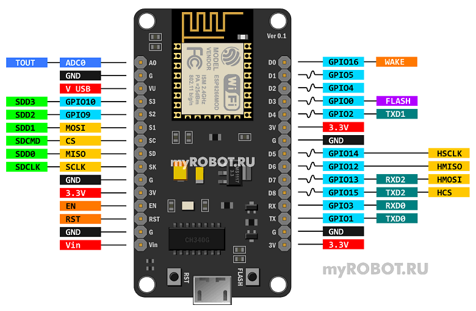
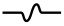

ESP8266 NodeMCU V3 распиновка (pinout)
ESP8266 NodeMCU V3 (LoLin)
Распиновка (pinout) ESP8266 NodeMCU V3 «LoLin» совпадает с распиновкой ESP8266 NodeMCU V2 «Amica», за исключением двух зарезервированных у NodeMCU V2 выводов RSV (reserved). У NodeMCU V3 к ним подключена "земля" и напряжение 5V с USB-разъема.
Кроме использования двух зарезервированных выводов, плата NodeMCU V3 практически не отличается от V2. В обеих платах используются одинаковые микроконтроллеры ESP8266, они имеют одинаковое количество памяти. А к немногим отличиям можно отнести увеличенные габариты у V3, что неудобно при работе с макетными платами, и использование микросхемы CH340G в качестве моста USB – UART, вместо CP2102, что никак не сказывается на работе с платой, кроме необходимости выбора соответствующего драйвера.

Описание и назначение выводов NodeMCU V3 ESP8266
GND — общий провод, "земля"
Выводы питания
Vin — вывод для подключения внешнего источника питания 5V. Стабилизатор AMS1117-3.3 позволяет подавать питание на Vin в широком диапазоне от 5 до 10 V. Хотя стабилизатор допускает подачу более высокого напряжения (до 15 V), но без дополнительного охлаждения может возникать перегрев чипа.
3.3V — контакт, на который подается выходное напряжение внутрисхемного стабилизатора. Может быть использован для питания подключаемых к плате датчиков. Суммарная максимальная нагрузка всех выводов 3.3V не должна превышать 300мА.
V USB — вывод, на который заведено напряжение 5V с USB-разъема.
Выводы GPIO
GPIO (General Purpose Interput Output) — контакты ввода/вывода общего назначения. Могут быть сконфигурированы как входы или выходы и программно назначены на различные функции.
Выводы управления
RST (Reset) — вывод используется для сброса микроконтроллера ESP8266.
EN (Chip Enable) — при подаче на контакт сигнала высокого уровня, микроконтроллер ESP8266 переходит в рабочий режим, при сигнале низкого уровня — в режим энергосбережения.
WAKE — контакт используется для пробуждения чипа ESP8266 из режима глубокого сна (deep-sleep mode).
АЦП (ADC)
ADC0 / TOUT — вывод встроенного 10-разрядного аналого-цифрового преобразователя (АЦП). Преобразованные значения лежат в интервале 0-1023. Платы разработки NodeMCU V2 и V3 поставляются с внутренним делителем напряжения, поэтому входной диапазон составляет от 0 до 3,3 В. Диапазон входного напряжения для АЦП в кристалле ESP8266: 0 — 1 В.
UART
UART (Universal Asynchronous Receiver-Transmitter) — асинхронный последовательный интерфейс устанавливает связь с другими устройствами по шине UART. У контроллера ESP8266 два модуля UART. Максимальная скорость передачи данных, заявленная производителем, 4,5 Mbps.
SPI
SPI (Serial Peripheral Interface) — последовательный периферийный интерфейс. NodeMCU имеет два SPI (SPI и HSPI) в ведущем и подчиненном режимах.
SDIO
SDIO — интерфейс безопасных цифровых входов/выходов, предназначен для коммутации с внешней флэш-памятью стандарта SD по последовательной шине.
Reserved
Зарезервированные выводы.
FLASH
Кнопка Flash на NodeMCU подключает к земле GPIO0. Ее можно использовать как обычную кнопку. Если программно подтянуть вывод GPIO0 с помощью внутреннего подтягивающего резистора к высокому уровню, то появление низкого уровня на этом выводе будет означать, что кнопка нажата.
Интерфейс I2C — последовательная асимметричная шина. I2C используется для подключения датчиков и периферийных устройств. NodeMCU ESP8266 не имеет аппаратных выводов I2C, но интерфейс можно реализовать программно. Поддерживаются как I2C Master, так и I2C Slave. Обычно в качестве контактов I2C используются следующие выводы.
PWM (pulse-width modulation) — широтно-импульсная модуляция (ШИМ) управляет мощностью методом пульсирующего включения и выключения вывода. NodeMCU поддерживает программный ШИМ на выводах, обозначенных на рисунке изгибающейся линией.

Материалы по теме:
�